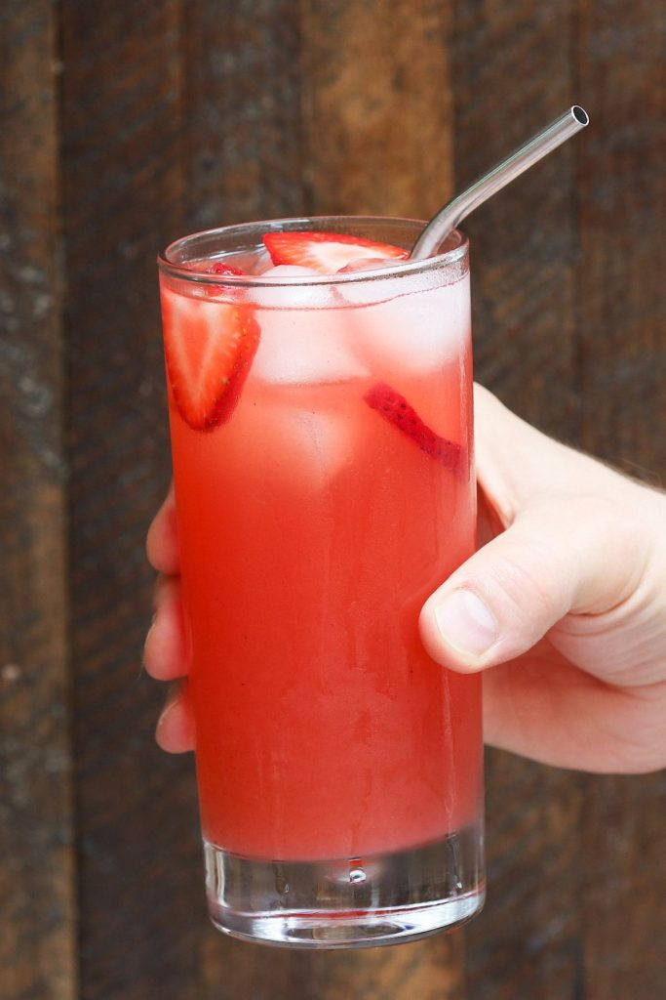

🍓Strawberry Acai🍓
A refreshing drink!
You may remember the Strawbery Acai refresher from Starbucks. However, have you ever wanted to make one from the comfort of your own home? Of course you have, and I am here to help!
Ingredients:
- 3 c Water
- 2 tsp passion fruit puree, 1/4 tsp at a time to adjust flavor
- 2 1/2 c White grape juice
- 2 1/2 tsp freeze-dried strawberry (powder)
- 1 tsp freeze-dried acai (powder)
- 3/4 tsp green coffee bean extract (powder)
- Ice
Steps:
- Add powdered ingredients with a few tablespoons of water and stir until dissolved. This will make a slurry (a loose paste) ensuring you don't have large chunks of powder throughout.
- Once the powder is thoroughly mixed, slowly stir in the last bit of water, passion fruit puree and white grape juice. I use a glass jar with a lid to break up any excess powder.
- Serve over ice with freeze-dried, frozen, or fresh strawberries.